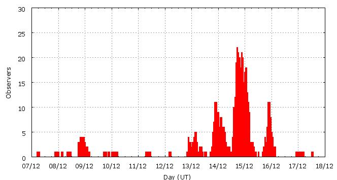

Activity profile
Activity profileThis page shows automated results of the Geminids 2007, based on visual data entered through the IMO electronic report form. Send your feedback regarding this page to Geert Barentsen or visit the project pages. Note that automated results are not suitable for scientific use!
Page generated on 10 August 2008 at 22:48 UT.
ZHRmax = 122 based on 12678 Geminids in 1055 data intervals, assuming fixed population index r = 2.0 and zenith correction 1/sin(hR).

| Time (UT) | Solarlon | nINT | nGEM | ZHR | |
|---|---|---|---|---|---|
| 2007-12-07 06:29 | 254.650 | 1 | 1 | 5 | +-4 |
| 2007-12-08 02:58 | 255.518 | 4 | 9 | 3 | +-1 |
| 2007-12-08 20:15 | 256.249 | 17 | 108 | 12 | +-1 |
| 2007-12-09 01:35 | 256.475 | 8 | 84 | 15 | +-2 |
| 2007-12-09 23:19 | 257.395 | 6 | 25 | 6 | +-1 |
| 2007-12-11 09:53 | 258.859 | 3 | 31 | 21 | +-4 |
| 2007-12-12 05:02 | 259.670 | 1 | 3 | 21 | +-10 |
| 2007-12-13 00:35 | 260.499 | 39 | 402 | 48 | +-2 |
| 2007-12-13 05:16 | 260.698 | 34 | 417 | 34 | +-2 |
| 2007-12-13 20:12 | 261.331 | 33 | 415 | 94 | +-5 |
| 2007-12-13 21:58 | 261.405 | 37 | 422 | 105 | +-5 |
| 2007-12-13 22:50 | 261.442 | 27 | 411 | 109 | +-5 |
| 2007-12-13 23:41 | 261.478 | 25 | 413 | 105 | +-5 |
| 2007-12-14 00:38 | 261.518 | 28 | 402 | 94 | +-5 |
| 2007-12-14 01:35 | 261.559 | 17 | 404 | 106 | +-5 |
| 2007-12-14 02:28 | 261.596 | 24 | 405 | 98 | +-5 |
| 2007-12-14 03:17 | 261.631 | 20 | 410 | 112 | +-6 |
| 2007-12-14 04:33 | 261.684 | 20 | 410 | 105 | +-5 |
| 2007-12-14 06:10 | 261.753 | 20 | 420 | 104 | +-5 |
| 2007-12-14 09:28 | 261.893 | 13 | 407 | 87 | +-4 |
| 2007-12-14 14:37 | 262.111 | 30 | 407 | 122 | +-6 |
| 2007-12-14 16:50 | 262.205 | 27 | 411 | 117 | +-6 |
| 2007-12-14 18:09 | 262.261 | 39 | 400 | 111 | +-6 |
| 2007-12-14 19:06 | 262.301 | 39 | 415 | 96 | +-5 |
| 2007-12-14 20:03 | 262.341 | 35 | 407 | 89 | +-4 |
| 2007-12-14 21:06 | 262.386 | 38 | 400 | 89 | +-4 |
| 2007-12-14 21:54 | 262.420 | 32 | 406 | 85 | +-4 |
| 2007-12-14 22:40 | 262.452 | 27 | 404 | 95 | +-5 |
| 2007-12-14 23:15 | 262.477 | 32 | 404 | 84 | +-4 |
| 2007-12-14 23:49 | 262.501 | 37 | 400 | 86 | +-4 |
| 2007-12-15 00:28 | 262.528 | 36 | 404 | 79 | +-4 |
| 2007-12-15 01:05 | 262.555 | 34 | 407 | 71 | +-4 |
| 2007-12-15 01:44 | 262.582 | 42 | 400 | 71 | +-4 |
| 2007-12-15 02:21 | 262.609 | 34 | 403 | 77 | +-4 |
| 2007-12-15 03:00 | 262.636 | 38 | 408 | 78 | +-4 |
| 2007-12-15 03:53 | 262.673 | 38 | 406 | 68 | +-3 |
| 2007-12-15 05:44 | 262.752 | 16 | 268 | 43 | +-3 |
| 2007-12-15 23:03 | 263.486 | 96 | 231 | 10 | +-1 |
| 2007-12-17 01:53 | 264.624 | 7 | 96 | 20 | +-2 |
| 2007-12-17 13:02 | 265.096 | 1 | 2 | 19 | +-11 |
For each estimation interval: time is the middle of the interval, nINT is the number of observing periods and nGEM is the number of Geminids involved. ZHR = (1 + sum nGEM) / sum(Teff/C) where Teff is the effective observing time and C is the total correction for limiting magnitude, clouds and zenith correction. The solar longitudes refer to equinox J2000.0.
Data has been received from 97 observers in 28 countries. Thank you for your efforts!

| Observer | Country | Teff | nGEM |
|---|---|---|---|
| Salvador Aguirre | Mexico | 10.10h | 325 |
| Salvador Aguirre | Mexico | 1.10h | 1 |
| Salvador Aguirre | Mexico | 1.00h | 3 |
| Salvador Aguirre | Mexico | 2.20h | 193 |
| Rainer Arlt | Germany | 0.40h | 17 |
| Pierre Bader | Germany | 5.78h | 127 |
| Gunjan Bansal | India | 1.00h | 2 |
| Tareq Bdran | Jordan | 3.00h | 129 |
| Alexey Berezhnoy | Russia | 0.33h | 7 |
| Felix Bettonvil | Netherlands | 2.21h | 210 |
| Geoff Carstairs | Australia | 1.75h | 27 |
| Farid Char | Chile | 4.80h | 99 |
| Sihao Cheng | China | 1.72h | 85 |
| Simiao Cheng | China | 1.89h | 114 |
| Tibor Csorgei | Slovakia | 1.32h | 53 |
| Sarthak Dasadia | India | 2.60h | 28 |
| Daniel Delaney | United States | 1.00h | 16 |
| Samer Derbi | Jordan | 3.00h | 85 |
| Shishir Deshmukh | India | 3.79h | 110 |
| Sietse Dijkstra | Netherlands | 9.06h | 85 |
| Irena Divisova | Czech Republic | 6.00h | 39 |
| Jaroslaw Dygos | Poland | 6.30h | 167 |
| Shlomi Eini | Israel | 8.22h | 585 |
| Frank Enzlein | Germany | 3.09h | 18 |
| Maria Eriksson | Sweden | 3.67h | 171 |
| Mariano Garcia Vilchez | Spain | 1.95h | 3 |
| Arnold Gentz | Romania | 0.76h | 43 |
| Ashvini Ghadigavkar | India | 2.29h | 25 |
| Sylvie Gorkova | Czech Republic | 6.00h | 36 |
| Mitja Govedic | Slovenia | 1.55h | 99 |
| Akshay Gupta | India | 1.00h | 2 |
| Shy Halatzi | Israel | 9.92h | 649 |
| Wayne T. Hally | United States | 1.20h | 8 |
| Joost Hartman | Netherlands | 2.17h | 34 |
| Roberto Haver | Italy | 0.51h | 13 |
| Roberto Haver | Italy | 2.41h | 91 |
| Vilem Heblik | Czech Republic | 8.24h | 50 |
| Sorin Hotea | Romania | 1.08h | 44 |
| Yue Hu | China | 1.83h | 19 |
| Zhongyang Hu | China | 0.83h | 7 |
| Jaak Jaaniste | Estonia | 2.16h | 43 |
| Jia Wei Ma Jia Wei Ma | China | 0.23h | 10 |
| Carl Johannink | Netherlands | 14.36h | 814 |
| Javor Kac | Slovenia | 4.94h | 203 |
| Amol Kankariya | India | 1.50h | 54 |
| Roy Keeris | Netherlands | 1.80h | 23 |
| Lance Kelly | Australia | 1.75h | 27 |
| Andre Knofel | Germany | 1.13h | 15 |
| Jakub Koukal | Czech Republic | 22.57h | 445 |
| Peter Kozich | unknown | 1.87h | 126 |
| Jens Lacorne | France | 3.04h | 39 |
| Peter Van Leuteren | Netherlands | 9.83h | 71 |
| Anna S. Levina | Israel | 21.44h | 1074 |
| Di Ma | China | 1.22h | 11 |
| Vimal Mamania | India | 9.81h | 181 |
| Adam Marsh | Australia | 1.75h | 28 |
| Pierre Martin | Canada | 6.07h | 196 |
| Mikhail Maslov | Russia | 1.29h | 30 |
| Bruce Mccurdy | Canada | 5.00h | 35 |
| Koen Miskotte | Netherlands | 7.42h | 469 |
| Koen Miskotte | Netherlands | 7.85h | 812 |
| Sirko Molau | Germany | 1.94h | 55 |
| Arash Nabizadeh | Iran | 1.33h | 114 |
| Mohammad Nilforoushan | Iran | 1.50h | 66 |
| Francisco Ocana Gonzalez | Spain | 14.67h | 806 |
| Suparerk Panarot | Thailand | 0.00h | 7 |
| Shyamal Patel | India | 0.50h | 2 |
| Tushar Purohit | India | 1.25h | 42 |
| Tenghuirui Qu | China | 1.90h | 47 |
| Jurgen Rendtel | Germany | 12.28h | 74 |
| Antonio Rodríguez Anaya | Spain | 3.00h | 148 |
| Amitabh Pandey (s.p.a.c.e.) | India | 1.00h | 2 |
| Rohan Shewale | India | 4.32h | 85 |
| Costantino Sigismondi | Italy | 1.32h | 11 |
| Chander Devgun Space | India | 2.00h | 45 |
| Wesley Stone | United States | 3.51h | 226 |
| Richard Taibi | United States | 1.27h | 17 |
| Rushikesh Tilak | India | 1.00h | 56 |
| Rafael Ruben Torregrosa Soler | Spain | 3.16h | 50 |
| Shigeo Uchiyama | Japan | 8.15h | 290 |
| Michel Vandeputte | Belgium | 21.20h | 1850 |
| Shrikant Vinchurkar | India | 1.50h | 38 |
| William Watson | United States | 1.33h | 19 |
| Ge Wei | China | 1.00h | 27 |
| Hao Wu | China | 2.10h | 72 |
| Jiangping Wu | China | 1.76h | 19 |
| Jiaqing Yang | China | 1.80h | 124 |
| Zhong Yang | China | 1.53h | 78 |
| Quanzhi Ye | China | 0.47h | 2 |
| Quanzhi Ye | China | 1.42h | 71 |
| Quanzhi Ye | China | 0.85h | 5 |
| Liyang Yu | China | 1.52h | 79 |
| Xiang Zhan | China | 1.20h | 103 |
| Xiang Zhan | China | 0.97h | 58 |
| Hao Zhou | China | 0.87h | 19 |
| Su Zou | China | 0.50h | 44 |
Create your own analysis!
Rate intervals: gem2007_rate.csv (CSV-format).
Magnitude distributions: gem2007_magn.csv (CSV-format).